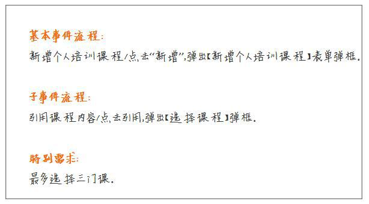
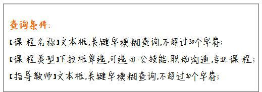
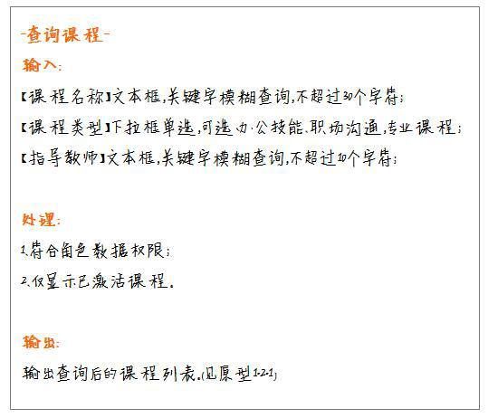
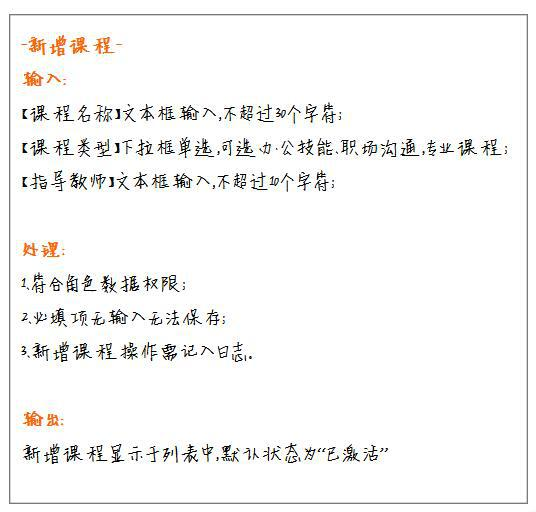
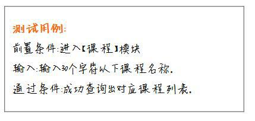

如何撰写后台PRD？
分享人：赵跃
一、前言
二、小课堂目标
三、为什么要进行后台设计
四、下笔的前提
五、下笔的顺序
六、什么样的需求文档开发爱看
七、描述方法
八、一些小TIPS
九、参考文献
十、致谢
一、前言
大家可能也浏览过许多关于后台设计的文章，大部分文章都是在阐述如何设计后台，给了我们很多设计理念上的建议与帮助。
只是，无论什么样的设计都最终都需要以文档的形式产出，因此，本文将在后台需求文档的撰写上分享心得和建议。
二、小课堂目标
给大家提供撰写后台PRD的思路
降低大家撰写后台PRD的难度
三、为什么要进行后台设计
我们设计后台的初心，都是为了支撑业务，并进一步提高运营效率和产品竞争力，这是我们在设计后台时需要时刻提醒自己的。
由于后台的产品不需要过多的考虑UI和交互设计，所以在明确好业务逻辑和系统架构之后，将效率的提升作为后台产品的重要指标（KPI），注意避免用户在使用你的产品时，做太多重复、机械的操作。
四、下笔的前提
关于后台的设计还是需要老话重提。产品经理一定要对你所设计的后台业务了如指掌，亲自深入到业务的实际工作中去，将工作流拆分成多个环节，形成功能的初步构想。
期间，你需要记录下业务的整体流程和涉及到的元素，如字段、字段限制、业务要求等。
我个人的习惯是先将这部分内容写于纸上，清楚的梳理好业务之后，再将内容转化成电子档。
在纸上，你可以迅速的对内容进行编辑、修改，甚至可以将原型直接画出，让功能先简单的呈现出来，再进行调整改动，这样可以减少很多电脑操作的时间。
同时还需明确目标用户，也就是这个功能是给谁用的。
一般后台的目标用户都是公司内部人员，如运营、市场等等，用户就在身边，那么产品经理千万不能浪费机会，一定要与用户进行沟通，提炼出他们的需求。
以下是可以提的一些问题举例：
过去是怎么处理这项业务的？
哪一个环节给你带来困扰或者说需要花费你大量的时间去完成？
你最希望实现的功能是什么？
谁可以操作这项业务？操作的范围又是哪些？
是否需要对用户的操作行为进行记录？
……
大家可以根据实际情况进行问题的列举和提问，只有充分地融入到用户中，才能设计出走心的后台哦。
总结一下，下笔之前需要明确几个要素：角色、角色的权限（包括功能权限和数据权限）、业务流程、所需字段、操作日志等。
五、下笔的顺序
无论是功能还在初拟阶段还是已经开始撰写需求文档，下笔的顺序一定是从核心功能（业务）->分支功能（业务），因为核心功能是奠定整个后台的基础，其他功能都是围绕着核心功能延伸开来。
无论是字段规则还是业务规则，其他功能都必须与核心功能保持一致，才能够保证后台的顺利运行。
当你完成核心功能的设计和文档撰写时，可以先与研发讨论设计是否合理和可行，接着再进行分支功能的设计，这么做避免后期需要推倒重做的窘境。
后台系统的目标用户可能是运营人员、市场人员……，而需求文档的目标用户一定是你的研发同事们，需求文档是你输出的一个产品，因此我们一定要让需求文档变得更清晰更易懂。
六、什么样的需求文档开发爱看
设计时要遵循“简洁、高效”的原则。能用一个词说明清楚的事，千万不要用一句话。
前后描述一致
设计后台时，模块之间必然会有关联性，不同的模块可能会涉及到相同的字段，因此对于每项字段、字段类型、字段说明等内容必须保持一致，不要有前后矛盾的情况。
善用表格、图文并茂
后台中的功能结构、角色权限的分配等结构性内容采用表格的形式；
数据流向、业务流程用流程图、泳道图等描述清楚；

原型图的各类按键规格保持一致，让研发或UI更好的设计，降低沟通成本。
七、描述方法
一般后台功能可分为列表数据、功能操作（增删改查等）两大块。可以从以下方式进行描述：
（1）列表数据
字段：字段名称、字段类型、字段描述、数据来源、字段规则等；
列表：呈现字段、排序规则、分页规则、状态等。
（2）功能操作
方法一：事件流程法
比较复杂的后台功能在同一个功能点中可能包含多个事件，所以复杂后台功能可按照：基本事件流程、子事件流程与特别需求来描述。

方法二：条件描述法
这个方法适用于查询功能，直接对需要查询的条件、规则进行描述。

方法三：输入输出法
输入处理输出大部分是由开发来考虑的，但产品经理如果能站在开发的角度，明确输入、处理、输出的内容，那会省去很多开发的理解成本。


方法四：简要测试用例
测试用例可直接用来表述简单、常见的功能，直击功能的目的。前提是这类功能一定是比较常见的，不需要过多的深入描述，开发也能懂。

八、一些小TIPS
1.需不需要描述很细节的东西？这个问题要取决于整个开发团队的默契度，以及在开发之前是否已经形成了标准的规范。
如果是，那么产品经理可以适当减少一些细节描述，简要概括，将重点放在业务的流程和逻辑上。
2.大部分情况下，前台需求决定后台需求，后台产品经理设计前一定要与前台产品经理进行深入沟通，不管是对目前有的功能还是未来的前台需求规划，后台产品经理都要了解，提前做好规划，眼光放长远，思考功能的可持续性。
3.有些团队的后台文档可能会由若干个产品经理共同完成，建议对每个模块的作者做好标注，方便开发找到负责人沟通。
同时，做好各大模块的标题和大纲，供开发查找。
4.一份需求文档一定会修改好几个版本，一般采用R（Requirement）0、R2.0……来表示版本号。
九、参考文献
如何完成后台PRD的撰写？—————人人都是产品经理
十、致谢
感谢大家的观看
随着第六次小课堂的完成
我的小课堂之旅也将告一段落啦
撒花~